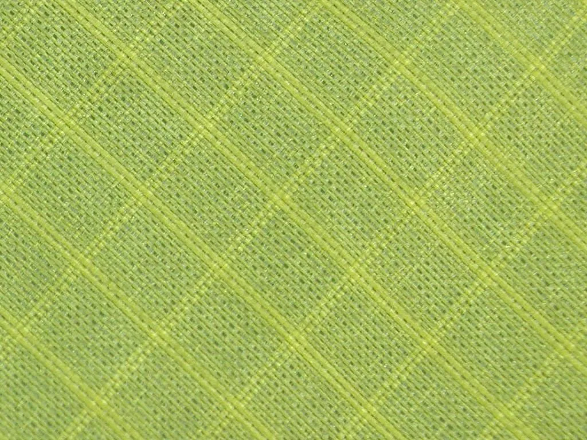

Composite Materials: Ultra-High Molecular Weight Polyethylene & Carbon Lattices
The exterior envelope of the K-400 Gale-Dome is fabricated from architectural-grade Dyneema composite
fabric, an ultra-high molecular weight polyethylene material with a tensile strength-to-weight ratio
fifteen times greater than structural steel. Unlike conventional polyesters, this matrix exhibits
virtually zero moisture absorption and complete immunity to sub-zero embrittlement down to -60°C.
The underlying geodesic skeleton replaces rigid aluminum tubes with unidirectional carbon-fibre struts
joining at seventy-two elastomeric flex-nodes. Rather than resisting hurricane velocities rigidly, the
frame deflects under catastrophic wind loadings to dissipate kinetic energy across the surface
hemisphere, returning autonomously to its geometry without plastic shear or stress fracture.

FIG 1.0 · Frost accumulation on tensioned high-tensile Dyneema grid-patterned exterior
matrix.
Thermal Baffling: Vacuum-Sealed Aerogel Insulation Matrix
Internal climate control relies upon an advanced thermal baffling architecture incorporating
encapsulated silica aerogel composite blankets. Engineered with a nano-porous internal structure, this
hydrophobic aerogel matrix achieves an ultra-low thermal conductivity rating of just 0.014 watts per
meter-Kelvin. By suspending these flexible panels within a hermetically sealed double-wall atmospheric
chamber, conductive heat loss through the carbon frame is entirely eliminated. Field instrumentation
confirmed a positive internal thermal differential exceeding twenty-five degrees Celsius above ambient
whiteout conditions utilizing only minimal secondary radiant heat generation. This elimination of
internal thermal bridging prevents hazardous condensation freezing and subsequent ice accumulation along
interior structural intersections.
Deployment Mechanics: Rapid Snow-Skirt Anchor Ballasting
Expedition efficiency demands reliable erection syntax when operating in extreme katabatic wind
corridors with severely limited visibility. The K-400 Gale-Dome deploys fully in ninety seconds without
specialized tooling or complex pole threading. Every primary tension point incorporates oversized,
mitten-operable cam-locks forged from anodized marine-grade alloys designed for zero-interference
actuation during severe gale blizzards. A circumferential 600-denier ballistic nylon snow-skirt extends
outwardly along the basal perimeter to accept ice ballasting, immediately stabilizing the shelter
against updraft extraction forces prior to screw-anchor penetration.